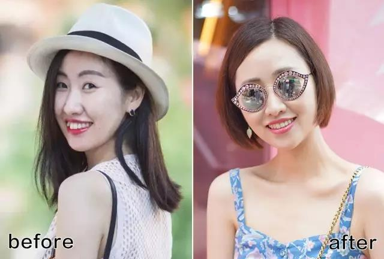
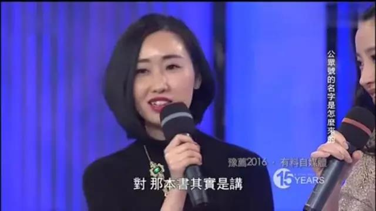
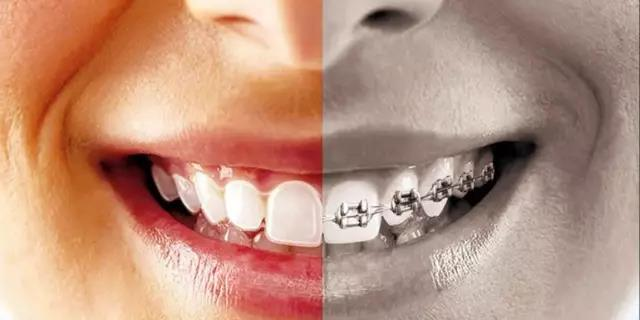
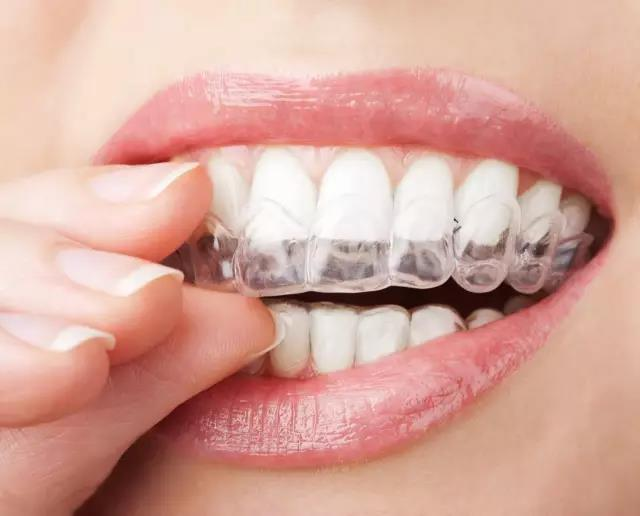
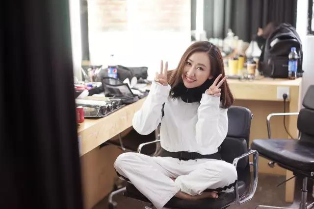
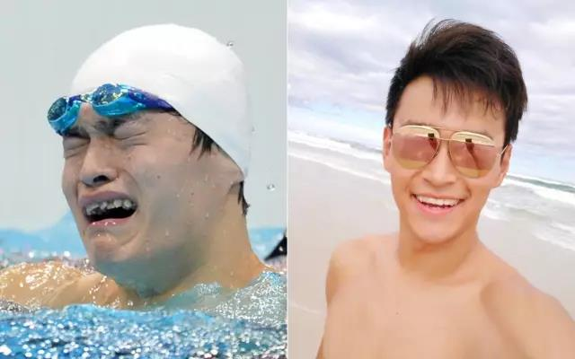

首先说一下我为什么在25岁以后下定决心去整牙？
上一下对比图
下面这些图片分别拍于刚戴牙套两周时、三个月、六个月、一年。感受一下每个阶段的变化~（这几张图也反映了我的化妆和PS技术的进化呢！哈哈哈）▼
这个问题，看完对比图后，你们已经有答案了。
但是，在如此显见的事实面前，关于要不要戴牙套这个问题，我却纠结了很多年。
我的小虎牙从小就有，当时长辈们总是会说“小虎牙”很可爱啊，我自己也不觉得这是个问题。但随着年龄的增长，我发现：不整齐的牙齿会变得越来越不整齐！以前可爱的小虎牙慢慢变得越来越“抢眼”，到后来连亲妈都会问“怎么以前不觉得你的牙那么不齐”~
老实讲，最后促使我下定决心整牙，是因为去年初录了《鲁豫有约》的访谈，看着屏幕上的自己那一口不整齐的牙，第二天就约了医生。节目是2016年1月份播的， 我是当年2月份戴上了牙套。▼
虽然我一直鼓励大家要接受自己的不完美，但前提是，要真心接受。就说牙齿这件事，我偶尔也会安慰自己“小虎牙也蛮可爱”，但我其实并没有真心接受这个缺点。比如说，因为觉得牙不好看，我拍照时很少会大笑，偶尔大笑就会习惯性用手捂着嘴（我妈妈纠正了我很多次都没纠正过来）。
所以，以前你们看到我的图大部分都是这种表情 ▼
相信很多牙齿不齐的小伙伴跟我一样，习惯性抿着嘴笑，或者捂着嘴笑，其实就是潜意识里对自己不自信。
而作为一个爱笑的人，我是真的很希望自己拥有这么灿烂的笑容啊（好的，我也知道这不光是牙的问题~人总是要有梦想的嘛!）
除了外表和心态。牙不整齐还涉及到健康的问题。所以才会因为年龄的增长、不好的生活习惯变得越来越严重。比如我以前就习惯用嘴呼吸，睡觉的时候会不自觉张着嘴，，医生说这其实是牙齿咬合不好导致的。现在真的不太会再张嘴呼吸了~
当然，要不要整，关键还是看自己。虽然我自己矫正了，但我也并不是主张人人都要做这件事。如果你的牙齿状况对你的心情和健康都没什么影响，自己觉得不矫正也蛮好的，就不用受这份罪了。
为什么选择隐形牙套？
放心，这不是任何一个牙套品牌或者牙科诊所的广告。关于牙套和诊所的问题，我后面都会讲到。
先来说说为什么选隐形牙套。
正畸的方法有很多，常见的包括金属托槽矫正、陶瓷托槽矫正、舌侧矫正、隐形矫正等。几种方案都比较过后，我选择了隐形牙套。
最重要原因当然是美观。常常有人问我“你说在整牙，怎么照片里看不出来”。因为隐形牙套是透明的，而且可以随时摘取的。拍片子的时候我大部分都摘下来了呀~就算不摘，如果不离的很近，基本看不出来。当然自己戴的时候还是有很明显的异物感。
选择隐形牙套，还有一个原因是：不需要拔牙、打钢钉，遭受的痛苦要少一点。当然拔牙这个是因人而异的。我只拔掉一颗智齿，也没有打钢钉。
医生采用的是片切的方法，需要在牙和牙之间磨出一些缝，让牙齿有空间可以排整齐。磨牙的时候不怎么痛，就是有一点紧张以及费时。
隐形牙套是牙医根据牙齿情况通过电脑技术量身定制一套透明牙托来完成整个矫正疗程，具体戴多少副，每个人情况不同。一般每两周更换一副牙套。我因为中间出了几次状况，戴了48副。
缺点当然也有。
首先就是比较贵。现在市面上的隐形牙套牌子很多了，但进口的主要就是隐适美（美国）、国产的主要是时代天使。国产的隐形牙套一般2-4w，进口的大概4-6w。具体价格因人因诊所而异。
我去的那家医院本来就偏贵，整个费用大概是五万块，包括第一个方案里的25副隐形牙套，不包括前面的洁牙、拔牙（智齿）、补牙什么的。也不包括后面因为医院的责任，换的新方案的23副。
其次是，这种隐形牙套的控制力度没有钢托槽的强，正畸的周期也相对更长一些。不过戴了之后我发现，隐形牙套比我想象中的调整能力是要强一些的。尤其是到后期，我的牙齿整齐得还蛮明显的。▼
（上个月拍的）
还有就是，隐形牙套虽然摘戴方便，但一开始摘和戴的时候也很痛苦。
每一副牙套是14天的周期，医生跟我说每天要戴22小时（说明书上写的是每天戴17小时）。刚开始戴牙套的第一周，我的舌头两侧和嘴巴，几乎全都磨破了。不过这个阶段两周就熬过去了。后来我就熟能生巧了。
（戴牙套一年零两个月）
对了，在戴新牙套的前3天，一定要用咬胶，可以让牙套和牙齿更好地贴合。我之前牙套不贴合、磨嘴的很大部分原因就是因为我懒得用咬胶，后来就都会咬了。
而且戴隐形牙套，平时麻烦也不少。
每回吃东西牙套都要摘下来，刷了牙才能再戴回去，平时出门还要戴着牙刷牙膏。所以导致刚开始戴牙套的那段时间，我因为怕麻烦，都不太爱吃东西。但是后来我的心态就转变成了：既然摘都摘了，不如多吃一点……于是乎就胖了。现在的体重比整牙前稳定增加了5斤。
（戴牙套快一年时）
戴隐形牙套，还要注意小心保管。
我就在戴牙套期间丢过两次牙套。一次是在台北的酒店，出门吃饭前，我把牙套摘下来放在牙杯里，结果被服务员倒掉了。那次出差的四五天里，我每天都心神不宁。因为我们的牙齿其实很容易找回原来的“记忆”，我很怕会因此影响矫正的效果。
（戴牙套七个月）
另一次是前不久去纽约出差。我上飞机就昏睡了十几个小时，快落地的时候醒过来又渴又饿，想着赶快吃点东西，就把牙套摘掉了。结果吃完东西回来发现牙套不见了，找遍座位附近都没有找到。所以在纽约的几天没有戴牙套，我也是非常焦虑。
这也算是隐形牙套的一个缺点吧，太隐形了也不好，很容易掉。不光我一个人这样，我看很多论坛网友分享也是说，他们的牙套在吃饭时被服务员丢掉了。所以提醒大家，如果选择隐形牙套，一定要多多注意保管好它。
（戴牙套一年零三个月）
整牙有副作用吗？
这是大家最关心的问题。
从纽约回来以后，医生本来说我要重新取模、戴新的牙套。但我因为一直在出差，实在没时间去弄，就还是戴了原本方案里的下一副牙套，目前为止感觉还不错~很多人说整牙可能导致的牙龈萎缩、牙槽骨吸收，我都没有遇到。
对我来说，整牙的正面作用肯定大过副作用。
（戴牙套七个月）
先来说说收获。开头就说了，最大的收获当然就是牙齿变整齐了。
脸型也有改变。好的变化是脸变瘦下巴变尖了。以前我的下半边脸肉肉的，现在下巴明显变尖了。▼
不好的改变就是脸颊有点凹陷，颧骨变高（这也是别人常常形容的牙套脸）。虽然医生说不会有，但在我身上真的还蛮明显。面部没有以前柔和，容易显得严肃~侧面看特别明显。▼
另外就是我戴牙套之后会有一个不自觉的小动作，总是用力地咬牙套，所以不知不觉法令纹也变深了，追悔莫及~希望摘掉牙套后能一点点保养回来。
不过我也遇到一个小问题，就是之前在洗牙的时候发现下排牙齿有很明显的松动，因为当时刚开始做下牙矫正，牙套特别紧，摘戴几次后就这一了。咨询了之前的正畸医生说等矫正完会改善。只能静观其变了~
在网上查了一下，理论上来讲，整完牙后牙槽骨多少会有吸收（儿童正畸一般较少发生），但牙齿不至于松动到影响吃东西。牙龈萎缩的情况也有可能出现，但不会影响生活。所以整牙之前，一定要和医生提前沟通所有可能出现的问题。
选择公立医院还是私立医院？
只能说各有好处，也各有不足。
我有很多朋友都是选择了公立医院。公立医院的优点是费用较低，有很多专业的医生，经验丰富。缺点是服务不会那么细致，人多，医生跟你的沟通比较少。
我经过几番比较，选择一家私立医院。私立医院相对来说就是服务和环境更好，能及时解答你的问题、提醒你复诊等。医生会一直跟进整个过程。但费用也相对更高。
但我觉得无论公立医院还是私立医院，医生是最重要的。最好多咨询一些医院，比较一下医生给的方案，综合看看哪个最适合自己。一定一定要重视和医生的沟通，否则可能会跟我一样遭遇下面的曲折——
按照原本的打算，我戴这个牙套应该是一年就戴完的，但现在已经一年半了。原因就是和医生前期没有沟通好，发生了我整牙过程中遇到的第一大波折。详细可以看之前的帖子写那篇小白鼠日记|| 我戴牙套这两个月。
后来医生也发现牙套越来越不贴，这个方案行不通，才按照新的方案，重新取模重新做牙套。中间我戴了一个月的保持器，等新的牙套做好。
好在新的牙套再戴上去就很贴了，效果很好，也不怎么磨嘴，摘取也比较方便。这才是牙套的正确打开方式啊，心好累......
我在这个医院遇到的又一个不靠谱事件是：在整牙的中途被迫临时换了医生。
我在写上次那个分享帖时，其实就想要换医院的。虽然我去的医院是朋友介绍的私立医院，收费也很贵，但他们的服务和医生的态度远没有达到我的预期。所以我当时就去咨询了其他的医院，想要换一家。
后来没有换，是因为很多正畸的医生都不愿意接手别人做过的案例，尤其是像我这样已经按照其他医生的方案在进行矫正了。一旦换医生，还要调整方案，其实对患者本身也不太好。最终我就没有选择换医院。
今年一月，在好几个月都没有人约我复诊的情况下，我自己打电话到医院，才被告知原来的正畸医生离职了，要临时给我换一个医生。前任医生和后来的医生完成工作交接，则是在我到了医院以后，他们把前任医生叫回来现场交接的。
虽然医院安排的医生是总监级别，接触下来也是很有责任心和经验的专家。但先不论医生好不好，如果我早知道诊所会这样做，那我可能在两个月发现情况不对时就已经换了医院了。
那时牙套已经戴到后面十副了。新医生跟我说，愿意相信他的话，就继续在这里做。我抱着“反正已经这样了”的想法，继续留在了这家医院就诊。新医生态度蛮好的，方案还是按照原计划进行，他每隔一段时间会帮我看一看进度怎么样，然后就到了现在。
写到这里，我这一年半的整牙心得就分享得差不多了。但其实这部血泪史还未完结，因为医生已经给我打了预防针说可能还要再戴一段时间，我打算过段时间再看看怎么继续调整~
对了，还有一个大家关心的问题就是：整牙有没有年龄限制？理论上，牙齿发育完全好了的情况下，年龄小正畸的效果会越好。但现在成人整牙也很普遍了。比如曾被调侃有“鲨鱼牙”的孙杨，整完后颜值提高了不少。
我记得有个医生跟我说他还曾经有过一位60岁的病人，这位老太太整牙倒不是为了美，而是牙齿问题已经影响到健康了。前几天还在微博上看到伊能静也说因为大小脸的问题也在戴隐形牙套。所以说每个人的情况都不同，别人的经历只能作为参考，具体情况一定要多咨询一些医生。
最后再次提醒大家：不要因为看到别人整牙的变化就一时冲动去整牙，一定要咨询好医生再做决定；也不要因为看到我整牙遇到这么多坎坷曲折就退却了，要相信戴牙套时流的泪，一定会换来最美的露齿笑~
（戴牙套一年零三个月）
另外，为了给自己鼓劲，我曾在我的公众号黎贝卡的异想世界做过一期整牙的读者征集《她们说||那些年整牙吞下的血和泪，终于换来最开怀的大笑》，就不贴上来了，欢迎到我的公众号上看。
来稿的对比图震撼到，不知道多少小伙伴看完想立刻冲进牙科诊所。没错，对比图总是很震撼的。但是，在下定决心整牙之前，一定要知道，变化是一点一点发生的，过程是漫长而艰辛的，绝不是before& after那么简单。
最后，如果你觉得我的回答有帮到你的话，请点个赞让我知道吧~